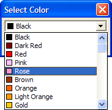

UI_SELECT_COLOR()
Syntax
Color_Name as C = UI_SELECT_COLOR()
Argument | Description |
Color_Name | The name of the color as Defined within Alpha Anywhere ( View > Settings > Database > Colors ). |
Description
The UI_SELECT_COLOR() function displays the Select Color dialog box and returns a color name.

Limitations
Desktop applications only.
Examples
? ui_select_color() = "Rose" |
See Also
((User Interaction _UI_ Functions|User Interaction (UI) Functions)), UI_SELECT_COLOR2(), Color Functions and Methods